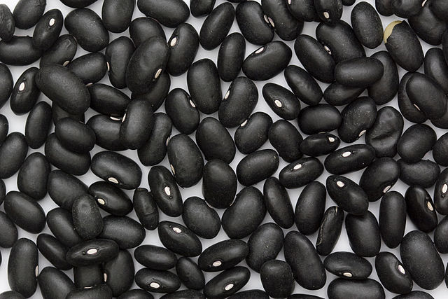
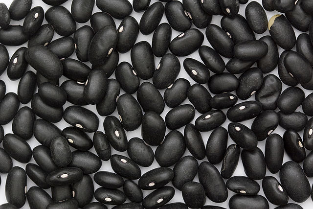

Grains are small, hard, dry seeds, with or without attached hulls or fruit layers, harvested for human or animal consumption. The two main types of commercial grain crops are cereals such as wheat and rye, and legumes such as beans and soybeans.
After being harvested, dry grains are more durable than other staple foods such as starchy fruits such as plantains and breadfruit and tubers such as sweet potatoes and cassava. This durability has made grains well suited to industrial agriculture, since they can be mechanically harvested, transported by rail or ship, stored for long periods in silos, and milled for flour or pressed for oil.


 Peanuts — first cultivated in the valleys of Paraguay

Beans — a summer crop that needs warm temperatures
Peanuts — first cultivated in the valleys of Paraguay

Beans — a summer crop that needs warm temperatures
 Lentils — an edible pulse from a bushy annual plant
Lentils — an edible pulse from a bushy annual plant
© Grains.